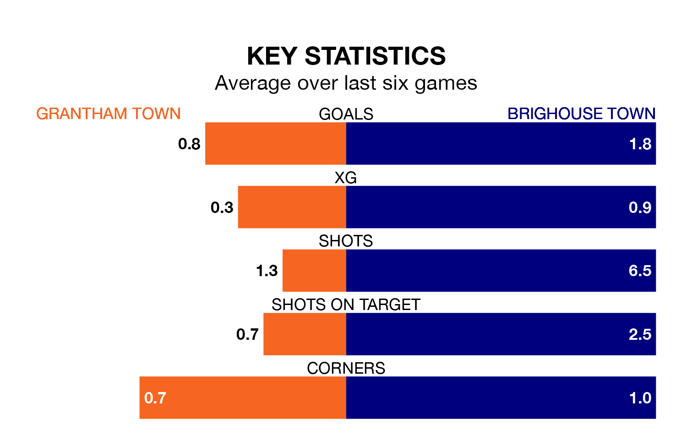

Grantham Town are on a terrible run ahead of hosting Brighouse Town at the South Kesteven Stadium on Saturday, with just one point collected from their last six games.
Grantham have picked up just one draw in their last six Northern Premier League – Division One East games, and face a Brighouse side whose last six games have brought three wins and one draw.
Grantham are bottom of the table after 21 games, of which they have won three and drawn five, earning 14 points.
Brighouse are nine places ahead of Grantham Town in 11th, with seven wins and six draws putting them on 27 points.
With 28 goals in 21 games so far this season, the hosts are scoring at below the league average rate with 1.3 goals per game. And they are conceding more than average, letting in 52 goals at a rate of 2.5 per game.
Brighouse Town, meanwhile, are above average scorers, with 1.7 goals per game, compared to a league average of 1.6. They have conceded 2.0 goals per game.
Grantham's last match was on December 30, a 5-0 loss against Belper Town.
Brighouse beat Liversedge 3-2 last time out, on Monday, with on the scoresheet.
Updated: 10:36, 03/01/24